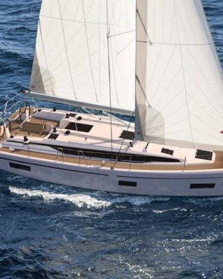
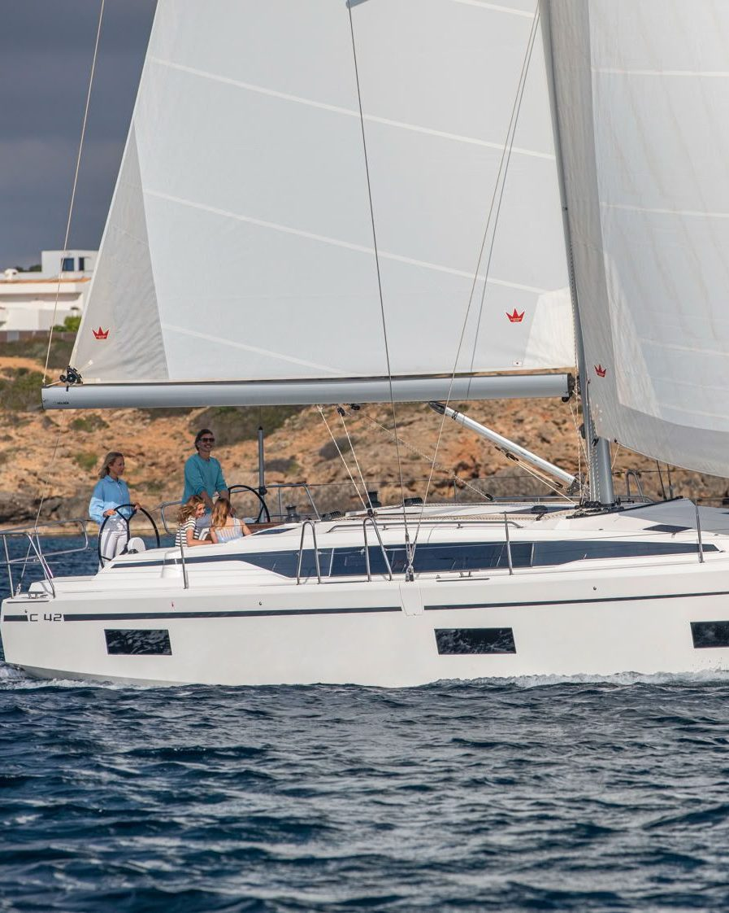
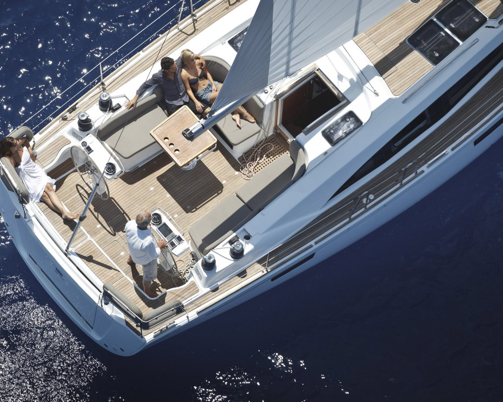
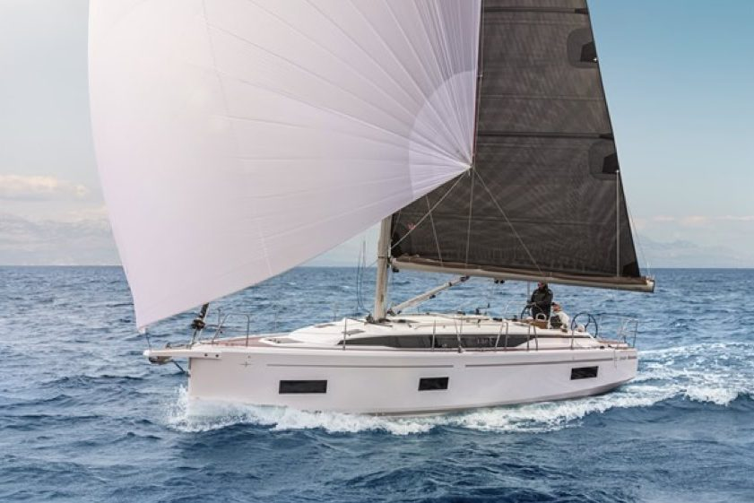
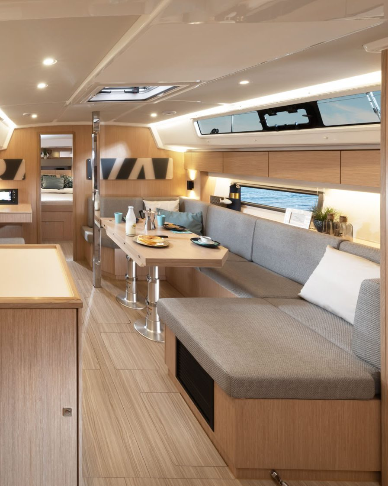
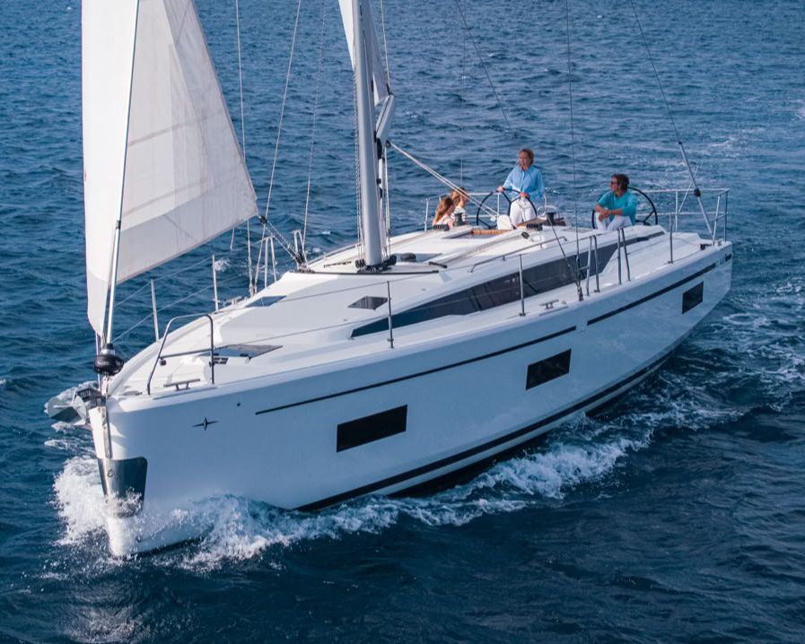
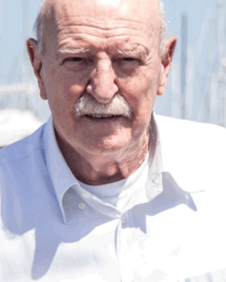
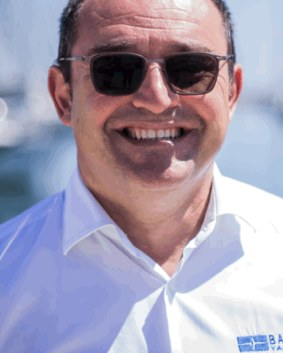
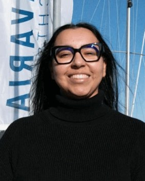

Bavaria C38
La più compatta della C Line, con la carena larga e gli interni luminosi delle sorelle maggiori. Si porta bene anche in due.

Gold Sail Ravenna, importatori Bavaria Yachts dal 2003. Barche a vela nuove in pronta consegna, usato scelto e preparato da noi, ricambi e assistenza nel porto di Marina di Ravenna.
Vedi le barche in consegna


La più compatta della C Line, con la carena larga e gli interni luminosi delle sorelle maggiori. Si porta bene anche in due.
Il centro della gamma: pozzetto ampio, plancetta di poppa che si apre sul mare, spazio sottocoperta per una famiglia.
La più grande che teniamo pronta: 13,95 metri di scafo e 4,70 di baglio, per le crociere lunghe in Adriatico e oltre.
Diciotto barche selezionate e preparate da noi, vela e motore. Schede tecniche e quotazioni aggiornate: chiedeteci quella che vi interessa.
Le barche entro mezzo metro si accendono in oro nell'elenco.

| Barca | Anno | Lunghezza | Stato |
|---|---|---|---|
| Fino a 11 metri | |||
| Bavaria 31 Cruiser | 2008 | 9,76 m | in trattativa |
| Beneteau Oceanis 34.1 | 2024 | 10,77 m | |
| Dehler 36 CWS | 1989 | 11,00 m | |
| Da 11 a 12,5 metri | |||
| Bavaria 37 Cruiser | 2017 | 11,30 m | |
| Beneteau Oceanis 38.1 | 2019 | 11,80 m | |
| Queentime 44 CC | 2000 | 11,98 m | |
| Bavaria 38 Cruiser | 2004 | 12,13 m | |
| Zuanelli 40 S&S | 2007 | 12,30 m | |
| Harmony 42 | 2007 | 12,42 m | |
| Gib Sea 41 | 2003 | 12,45 m | in trattativa |
| Da 12,5 a 14 metri | |||
| Bavaria 46 Cruiser | 2019 | 13,60 m | |
| Bavaria 44 Vision | 2007 | 13,70 m | |
| Grand Soleil 45 | 1993 | 13,94 m | |
| Oltre 14 metri | |||
| Jeanneau Sun Odyssey 479 | 2017 | 14,43 m | in trattativa |
| Beneteau Sense 50 | 2012 | 15,27 m | |
| Bavaria C50 Style | 2024 | 15,99 m | in trattativa |
| Gieffe 53 | 2004 | 16,20 m | |
| Motore | |||
| Sea-Doo Challenger 230 Wake | 2008 | 7,26 m | |
| Vele nuove in magazzino | |||
| Set Elvstrom per Bavaria C42 | 3.100 € | IVA esclusa | |
| Set Elvstrom per Bavaria C45 | 3.500 € | IVA esclusa | |
| Set Elvstrom per Bavaria C46 | 3.900 € | IVA esclusa | |






Passate su una voce per leggerne il dettaglio.Vendita, assistenza e magazzino sono nella stessa sede, in Via Marinara 77.

Per un ricambio bastano modello, anno e matricola dello scafo: Elena Veronesi controlla la disponibilità e vi richiama. Le vele per C42, C45 e C46 sono già in magazzino.
Una famiglia di regatanti: dal 470 olimpico al mestiere di vendere barche, e dal 2003 Bavaria in tutto il Nord Est e l'Adriatico.

Fondatore, vendite
Una vita sui campi di regata con il 470, poi vent'anni con il Cantiere del Pardo e X-Yachts: un occhio allenato a valutare quasi ogni barca in circolazione.

Direzione
Salito su un Optimist a cinque anni e mai più sceso. Regatante, segue la vendita del nuovo e dell'usato. Il suo numero è il 347 402 2602.

Amministrazione e ricambi
Trova il pezzo giusto dalla matricola dello scafo e tiene il magazzino di Marinara. Scrivetele a e.veronesi@goldsail.it.

La sede nel porto di Marinara è anche officina, magazzino e punto d'incontro di chi torna da una crociera o da una regata.